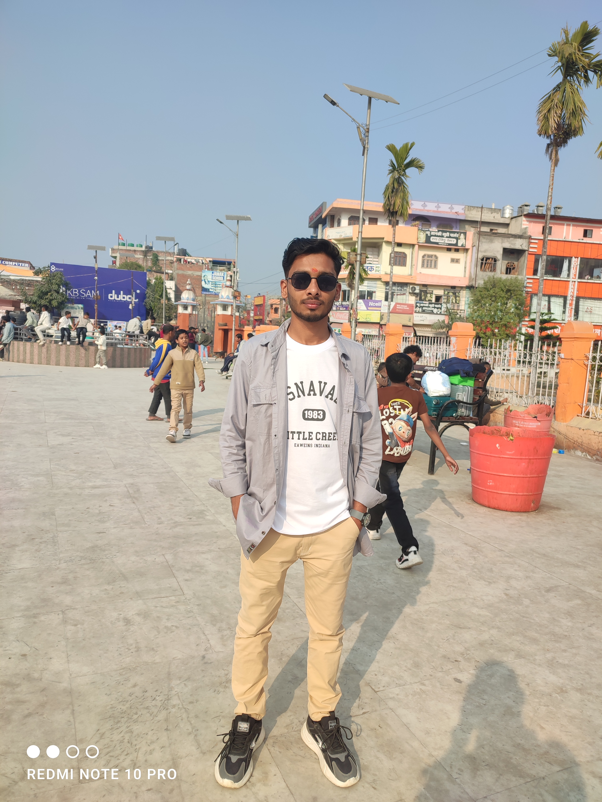

THE FOUNDATION
Curiosity meets code
Started learning how websites are shaped with HTML and CSS, then added JavaScript to give them a little life.
BUILDING ON IT
COMPUTER ENGINEERING STUDENT / LEARNING BY BUILDING
I’m a first-semester Computer Engineering student who loves turning ideas into useful things on the web — and figuring out what to build next.
01 THE PERSON BEHIND THE PIXELS
I’m at the beginning of my Computer Engineering journey, building strong foundations and discovering what I can create with technology.
Right now, I’m studying C in class and strengthening my web foundations by making things outside it. I enjoy the moment a blank page becomes a working idea — even when the path there includes a few bugs.
I’ve explored turning an HTML expense tracker into an Android app with Capacitor, published projects with GitHub Pages, and learned my way around domains and DNS. There’s a lot more I want to discover, and that’s the fun part.
More about my journey02 ONE STEP AT A TIME
Not a finish line — just a snapshot of what I’ve learned and what I’m reaching for next.
THE FOUNDATION
Started learning how websites are shaped with HTML and CSS, then added JavaScript to give them a little life.
BUILDING ON ITRIGHT NOW
First-semester Computer Engineering student. Working through C programming and learning to think carefully about how software works.
IN PROGRESSUP NEXT
Exploring C++, Linux, modern web development, Android development, and the tools that help teams build together.
ON THE HORIZON03 SMALL IDEAS, REAL LEARNING
A few experiments and concepts from my learning journey. Some are hands-on explorations; others are ideas I’d love to take further.
Explored turning an HTML-based expense-tracking website into an Android app using Capacitor. A practical way to learn how web skills can travel beyond the browser.
A room-rental website idea shaped around making local listings easier to browse, compare, and understand.
A food-delivery concept exploring how a simple digital experience could connect people with nearby meals.
This portfolio brings my background, interests, and early project ideas together in one place — and will keep growing as I do.
✳ Early-stage projects are labeled as concepts — every great build starts as an idea.
04 MY CURRENT TOOLBOX
Skills grow with practice. Here’s an honest snapshot — not a scorecard, just where I am today.
05 ALWAYS ASKING “WHAT IF?”
OPEN TO LEARNING & GOOD CONVERSATIONS
I’m always glad to meet fellow learners, hear about interesting projects, and swap ideas. Find me through my personal site.